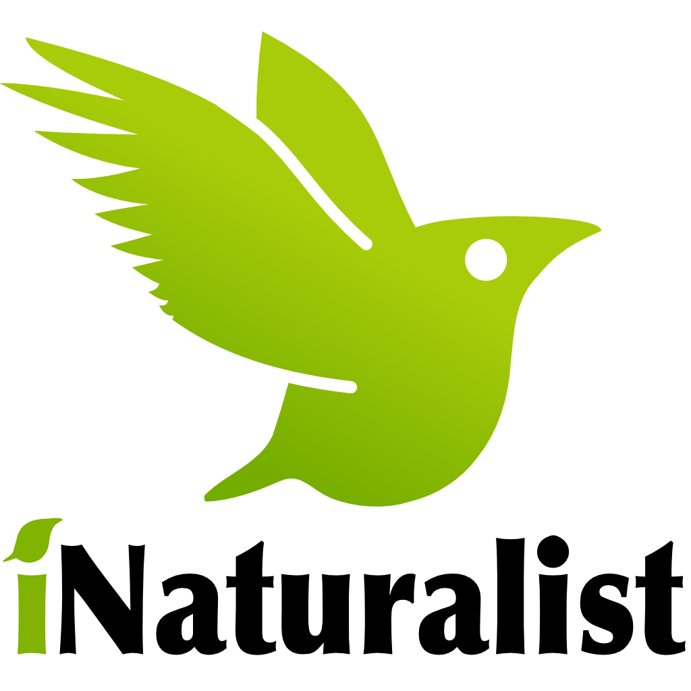
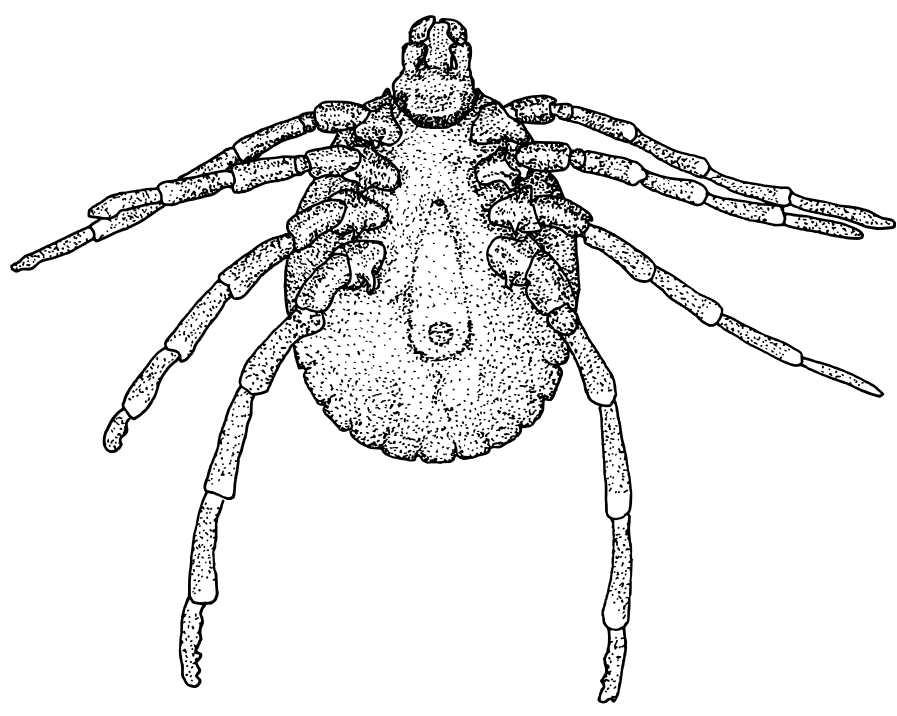

Tick Exploration iNaturalist Project


Participate in our iNaturalist project and help us uncover the movement of ticks and their pathogens in Western Australia. If you've come across ticks in your area, share their photos on iNaturalist to contribute to our research. We're curious to learn how ticks respond to environmental changes like climate change and urbanisation in Western Australia.
If you have any questions or want to send in your tick samples, feel free to email me at x.barton@murdoch.edu.au. Your contributions will play a crucial role in expanding our understanding of tick spread in Western Australia.
See how to sign up below: